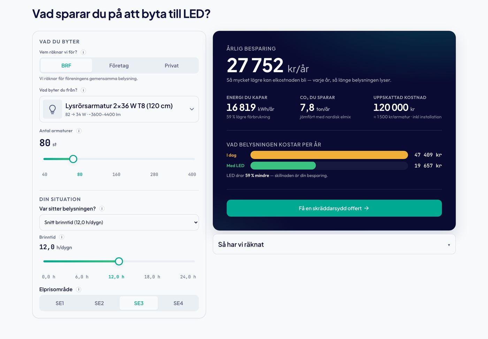
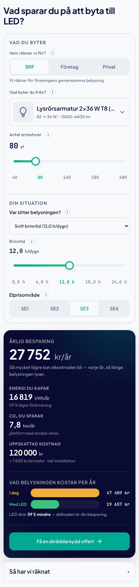
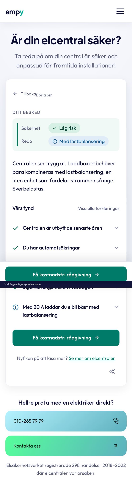

Layoutfamiljer
Två familjer skeppas för verktyg: kalkylatorns tvåpanel och diagnostikens rail och scen. Två sätt bär blocken på tjänstesidorna: H2 vänster med panel höger, och fullbreddsbandet. Allt annat är drift.
ampy-foretagsdata.md §11.3 (de två layoutfamiljerna, kanonisk ägare), .claude/skills/ampy-wireframe-ux/SKILL.md §3 (tillämpningen: slot för slot, resultatpanelens ordning, mobilomläggningen), konsolidering/komponenter-karta.md (Verktyg, Diagnostik, Block), inventeringarna för led-kalkylator, elcentral-kollen, rot-gt-cro och certificates.
A. Kalkylatorns tvåpanel: vitt inputkort, mörkt resultatkort
För finansiell projektion, kostnadsuppskattning och konfigurator (LED, EV, energi, batteri). Vänster: vitt inputkort med begränsade val, avancerade val hopfällda. Höger: mörkt midnight-resultatkort där siffran, inte rubriken, är den tända punkten i första viewporten. Resultatpanelens ordning är låst.
Ordningen är argumentet gjort fysiskt: krok (siffran), bevis (trion), demonstration (enheten), fråga (CTA), revision på begäran (metoden). Kalkylatorkitets komponenter: Kalkylator-kitet.


B. Diagnostikens rail och scen
För diagnostik-arketypen (Elcentral-kollen, Elkollen). Cirka 44fr / 56fr. Vänster: varumärkesrailen som står kvar hela tiden med H1, lead, tre trust-punkter och två gradient-CTA:er. Höger: scenen där interaktionen sker, från ingång via frågor till besked. Railen håller legitimiteten och candour-löftet ("ingen hake") i synfältet medan skeptikern svarar.
Trust-punkterna återanvänds ordagrant: "Byggt på Elsäkerhetslagen och Elsäkerhetsverket", "Registrerat elinstallationsföretag", "Helt gratis. Inget mejl, ingen inloggning, ingen hake". Diagnostikens komponenter: Diagnostik-kitet.


C. Blocket på tjänstesidan: H2 vänster, panel höger
Prejudikatet är avdragsblocket (ROT-GT D2): H2 och stegen i vänsterspalten, kvittopanelen i högerspalten, i ett fullbreddskort som är sin egen container. Samma form bär eljour-blocket (samtalskort 4fr, symptomlista 6fr), CTA-bandet (text 1fr, porträtt 400) och visste-du-att (text 1fr, lampa 260). Regeln: EN H2 per block, panelen vertikalt centrerad mot vänsterspalten, staplat under kortets egen brytpunkt.
Se blocket renderat: Avdragsblocket, Eljour, CTA-band, Visste du att.


D. Fullbreddsbandet
Vitmarginalregeln är pensionerad (ägardirektiv 2026-08-14): nya block kör nära full bredd. Bandet är ytan som bär ett block från kant till kant, med innerlayouten cappad på container 1280 (eller 1560 för fullbreddskort över 1497 px). Certifikat-bandet, header och footer, testimonials-sektionen och före/efter-sektionen är band; heros är ramar (radie 22) med 8 till 26 px luft runt.


När används vilken
| Arketyp / behov | Familj | Varför | Prejudikat |
|---|---|---|---|
| Finansiell projektion, kostnadsuppskattning, konfigurator | A. Kalkylatorns tvåpanel | Siffran ska vara den tända punkten i första viewporten; inputs till vänster, resultat till höger, metoden på begäran. | LED, EV, energi (auk 1), batteri (auk 3) |
| Diagnostik / besked (rätt behörighet? behöver centralen bytas?) | B. Rail och scen | Tillitsramen får aldrig scrolla bort medan besökaren svarar; scenen byter tillstånd, railen står. | Elcentral-kollen, Elkollen (auk 1) |
| Block på tjänstesida med en regel eller ett argument (avdraget, symptomen, samtalet) | C. H2 vänster, panel höger | Vänsterspalten bär läsningen uppifrån och ned, panelen bär det som ska läsas på tre sekunder. | ROT-GT D2, eljour-blocket, CTA-bandet |
| Tillit, bevis, omdömen, navigation, avslut | D. Fullbreddsband | Ytan är budskapet (mörkt band = tyngd, ljust band = luft); innehållet cappas på 1280. | Certifikat, testimonials, före/efter, header, footer |
| Bekräftelse och CRM-sidor (tack, offert accepterad, bokning) | Ett centrerat kort (520 till 780) på den ljusa auroran | Ingen sajtheader, ett dokument. Auroran bara här (B11). | Thank-you, offer-accepted, booking (auk 2 till 3) |
Det som inte finns: en tredje verktygsfamilj. Skillens "rot-gt-calculator"-wireframes (fem alternativ byggda på en dag) är underkända av ägaren och står som motexempel i blockbiblioteket.
Kvalitetsribban som varje layout mäts mot (fem punkter, PASS eller FAIL): leder med exakt vem det är för, EN signaturenhet, ärlig och specifik copy, formfriktion kalibrerad till funnelsteget, instrumenterad för att lära. Kanon: ampy-foretagsdata.md §11.1.